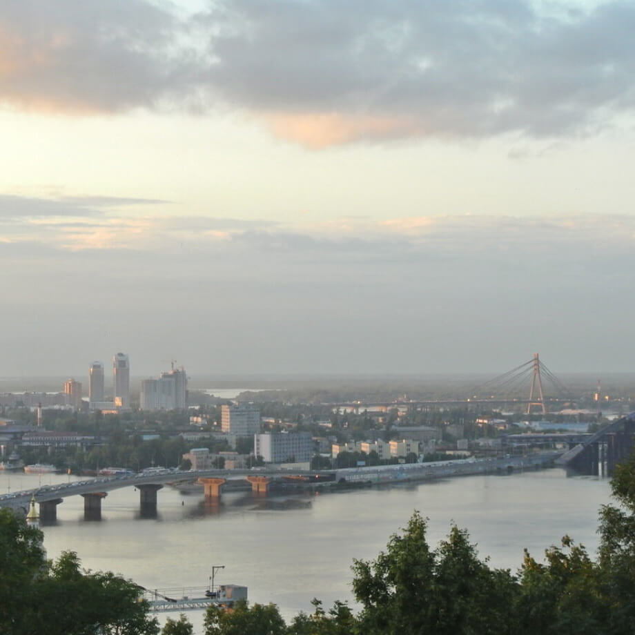
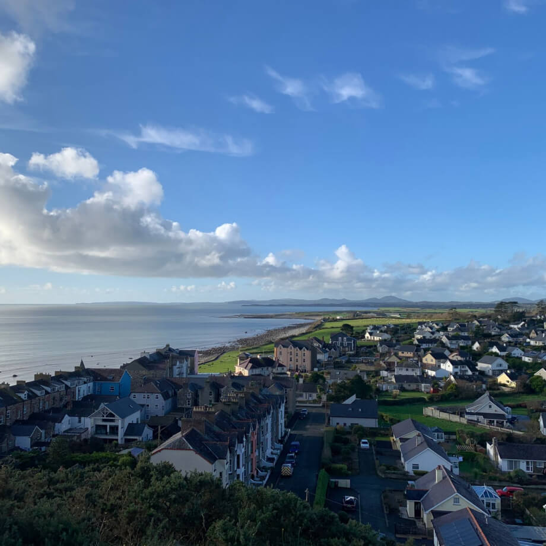
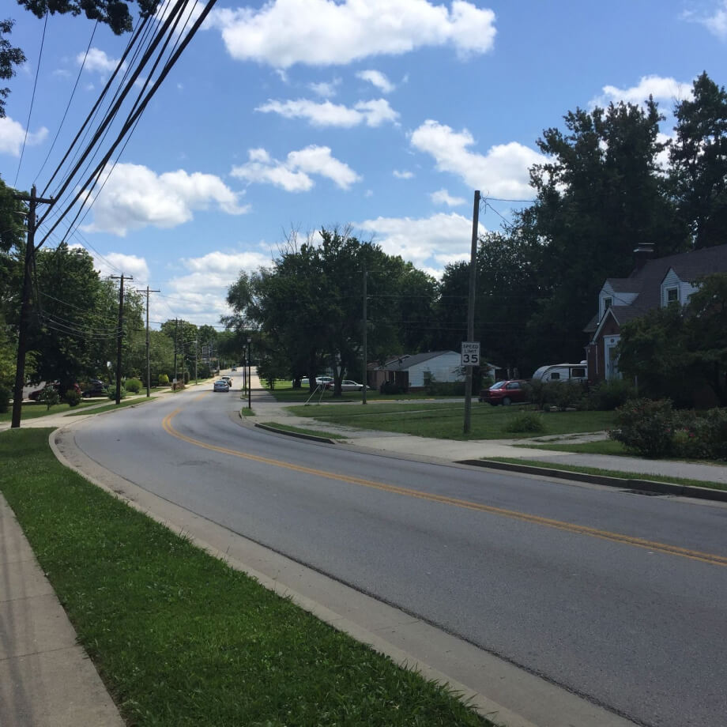
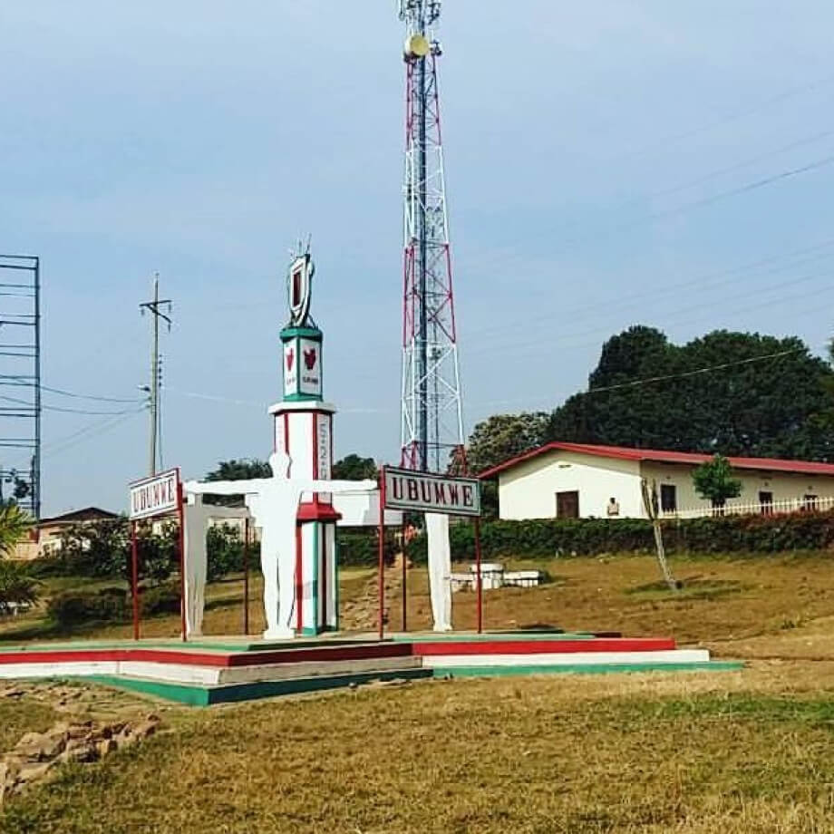
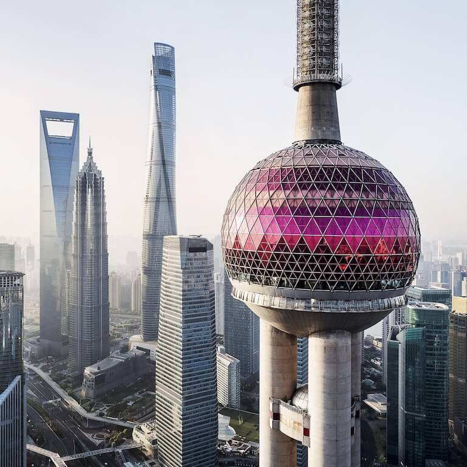

Kyiv, Ukraine
ARTIST
Natalia Dolgushina, content producer

Kyiv (or Kiev), Ukraine's capital, is a large city located on the shores of the Dnipro river. Of course, no one
in their right mind would swim in the river, unless they grew up here, in which case they've probably tried it
at some point. Summers are hot here, and the winters are drafty, but the fall and the spring are are absolutely
amazing.
The city itself is a mix of pre-revolution, post-war and soviet architecture, all of it sprinkled with modified
balconies. If you're on the right bank of the Dnipro, the landscape is difficult to traverse for people on bikes
and those wearing heels. The left bank is considered far less interesting and prestigious though, even by people
who live on the far outskirts of the right one.
Buy this artwork as NFT
Cricieth, Wales
ARTIST
Steffan Warren, lead editor
Kseniya Glagoleva, project manager

The medieval ruin of Cricieth Castle overlooks the town below from a rock that juts out into the sea. It is
thought to have been built by Llewelyn the Great in the 13th century. Some 900 years later, the self-styled
Pearl of Wales on the Shores of Snowdonia has become a popular tourist destination during the summer months.
A short walk down the road from the castle, you can enjoy the world's best ice cream at Cadwalader's, whose
secret ingredient is rumored to be locally sourced seaweed. Another claim to fame is the fact that Cricieth won
the Wales in Bloom award for five years in a row for its spectacular floral displays around town. It was also
home to David Lloyd George, the only Welshman ever to hold the office of Prime Minister of the UK.
Buy this artwork as NFT
Berea, USA
ARTIST
Travis Turner, author and editor

Berea is a small town located in the central part of Kentucky. The town is surrounded by beautiful forests
and countryside. It's known as the arts and crafts capital of the state, and visitors will find plenty of
shopping opportunities: shops with handmade jewelry, candles, wood items, galleries, glass studios, and more.
The town holds a yearly festival celebrating "spoonbread", a local dish made with cornbread and served with
a wooden spoon.
However, it's probably known best for the local college. Berea College was founded in 1855 and was the first
college in the south to be racially integrated, as well as the first to be coeducational. Somewhat uniquely,
it charges no tuition — every student receives a full-tuition scholarship.
Buy this artwork as NFT
Muramvya, Burundi
ARTIST
Grevisse Kenguruka, tech editor

Muramvya is one of the 18 provinces of Burundi. In the kingdom era, Muramvya was the royal capital and in 2007,
because of its cultural and natural landscape, it was added to the UNESCO World Heritage Tentative List. It is
located in the center of Burundi, between the country's political and economic capitals
The weather is rather chilly at night, but during the day, you would think you're in heaven. At 2,665 meters
(8,743 ft) above sea level, Mount Teza is one of the coldest places in the province. But that cool breeze allows
for one of the largest plantations of tea and coffee in the country, which make up the bulk of Burundi's exports.
The Kibira National Park, one of the largest wildlife reserves for apes, overlaps four provinces, including
Muramvya. This National Park lies at the apex of the beautiful mountains of the Congo-Nile Divide, ranging between
1550 and 2660 meters of altitude. It is filled with beautiful vegetation, and a source for the various rivers and
streams which provide water around the country.
Buy this artwork as NFT
Shanghai, China
ARTIST
Yuffie Hu, Web Developer

Shanghai is one of the four direct-administered municipalities of the People's Republic of China. The city is
located on the southern estuary of the Yangtze River, with the Huangpu River flowing through it. Shanghai is a
global center for finance, business and economics, research, education, science and technology, manufacturing,
tourism, culture and transportation, and the Port of Shanghai is the world's busiest container port.
The culture of Shanghai was formed by a combination of the nearby Wuyue culture and the "East Meets West" Haipai
culture. Wuyue culture's influence is manifested in Shanghainese language—which comprises dialectal elements from
nearby Jiaxing, Suzhou, and Ningbo—and Shanghai cuisine, which was influenced by Jiangsu cuisine and Zhejiang cuisine.
Buy this artwork as NFT